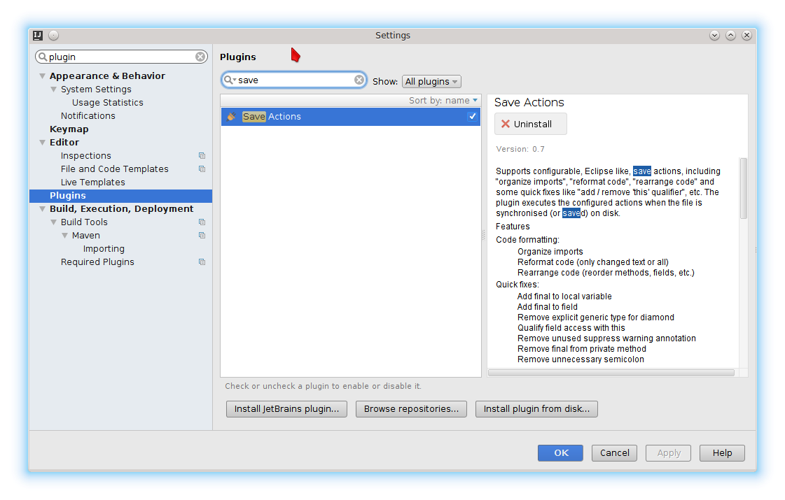

Intellij reformat on file save
I remember seeing in either IntelliJ or Eclipse the setting to reformat (cleanup) files whenever they are saved. How do I find it (didn't find it in the settings)
Answer
I suggest the save actions plugin. It also supports optimize imports and rearrange code.
Works well in combination with the eclipse formatter plugin.
Search and activate the plugin:

Configure it:

Edit: it seems like it the recent version of Intellij the save action plugin is triggered by the automatic Intellij save. This can be quite annoying when it hits while still editing.
This github issue of the plugin gives a hint to some possible solutions:
https://github.com/dubreuia/intellij-plugin-save-actions/issues/63
I actually tried to assign reformat to Ctrl+S and it worked fine - saving
is done automatically now.
Suggest
I suggest the save actions plugin. It also supports optimize imports and rearrange code.
Works well in combination with the eclipse formatter plugin.
Search and activate the plugin:
Configure it:
Edit: it seems like it the recent version of Intellij the save action plugin is triggered by the automatic Intellij save. This can be quite annoying when it hits while still editing.
This github issue of the plugin gives a hint to some possible solutions:
https://github.com/dubreuia/intellij-plugin-save-actions/issues/63
I actually tried to assign reformat to Ctrl+S and it worked fine - saving
is done automatically now.